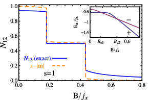
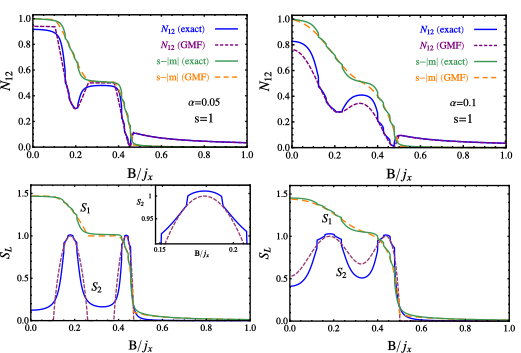
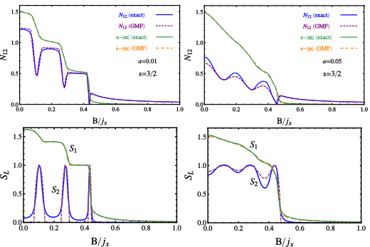
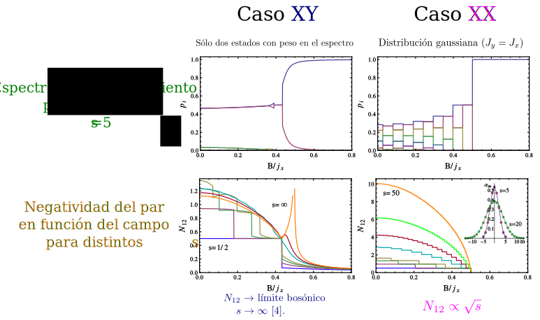
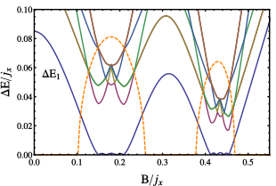
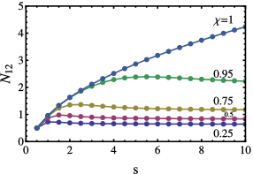
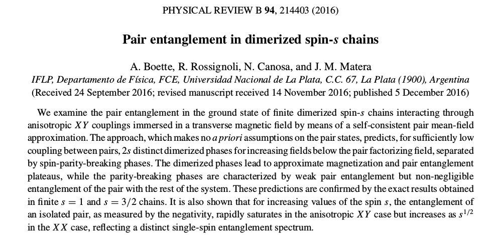

Entrelazamiento en cadenas dimerizadas con espín \(s\ge 1\)
Motivaciones
- Estudiar Correlaciones Cuánticas en Cadenas \(XY\) de espin \(s\) inmersas en campo magnético
Campo medio convencional \(\rightarrow\) falla
Campo medio autoconsistente basado en pares.
- Ruptura de simetría de paridad de espín
indicador de entrelazamiento.
- Fases dimerizadas al aumentar el campo
- "Plateaus" de magnetización y entrelazamiento
- Ruptura de simetría de paridad de espín
Modelo
Hamiltoniano
\(H=\sum_{i\; {\rm par}}\! B(s^z_{i-1}+s^z_{i})-\sum_{\mu}J_\mu(s_{i-1}^\mu s_{i}^\mu+\alpha s_{i}^\mu s_{i+1}^\mu)\)
con \(\mu=x,y\), \(\chi=J_y/J_x\leq 1\), \(|\alpha|\leq 1\).
Aproximación de campo medio de pares (GMF)
- basada en \(|\Psi\rangle=\otimes_{i\;{\rm par}} |\psi_i\rangle\).
Hamiltoniano autoconsistente \(h=\sum_i h_i\) \(h_i=B(s^z_{i-1}+s^z_{i})-\sum_{\mu}J_\mu[s_{i-1}^\mu s_{i}^\mu+\alpha(s_{i}^\mu \langle s_{i+1}^\mu\rangle+s_{i-1}^\mu\langle s_{i-2}^\mu\rangle)]\)
Acoplamiento interno tratado en forma exacta.
Simetría de Paridad: \([H,P_z]=0\), \(P_z=e^{i\pi S_z}\)
Fases dimerizadas: \(\langle s_i^\mu\rangle=0\), \([h,P_z]=0\)
Fases con simetría rota: \(\langle s_i^\mu\rangle\neq 0\), \([h,P_z]\neq 0\)
Condición crítica: \(\alpha>\left[J_x\sum_{k>0}\frac{|\langle\psi_k^0|S^x_t|\psi_0^0\rangle|^2}{E_k-E_0}\right]^{-1}\) Restauración de simetría en fase:\(|\Psi_{\pm}\rangle\propto(1\pm P_z)|\Psi\rangle\)
Par Aislado
- Comportamiento magnético exacto del entrelazamiento de un par aislado de dos espines \(s=1\) para \(J_y/J_x=0.75\), mediante la negatividad
- \(N_{12}={\textstyle\frac{1}{2}}({\rm Tr}|\rho_{12}^{\rm t_2}|-1)\)
- Magnetización intensiva \(m=\langle S_z\rangle/2\)
- El estado fundamental sufre dos transiciones de paridad (inset), la última en el campo factorizante [3] \(B_s=\sqrt{J_y J_x}/2\) (\(j_x=J_x s(1+\alpha)\))
- 
- El estado fundamental sufre dos transiciones de paridad (inset), la última en el campo factorizante [3] \(B_s=\sqrt{J_y J_x}/2\) (\(j_x=J_x s(1+\alpha)\))
Diagramas de fases dimerizadas
- Resultados exactos y GMF para cadenas de espin \(s=1\) y \(s=3/2\). Para \(\alpha\) pequeño,
- surgen en GMF \(2s\) fases dimerizadas de paridad definida para \(B<B_s\), separadas por fases con paridad rota.
- surgen en GMF \(2s\) fases dimerizadas de paridad definida para \(B<B_s\), separadas por fases con paridad rota.

RESULTADOS
- Buen acuerdo con los resultados exactos,
- negatividad del par y la magnetización
- entropías de entrelazamiento \(S_2\) (par-resto) y \(S_1\) (espin-resto).
- Espin \(s=1\)
- 
- Espín \(s={\textstyle\frac{3}{2}}\)
- 
Comportamiento para valos del espín \(s\ge 1\)
- 
Espectro de energía
- Relación entre ruptura de simetría y espectro exacto de energías.
- GS exacto exhibe \(2ns\) transiciones de paridad, confinadas en los intervalos de simetría rota de GMF.

Negatividad en función del espín
- Negatividad a campo nulo vs. \(s\) para distintas anisotropías \(\chi=\frac{J_y}{J_x}\)
- 
RESUMEN
- GMF describe correctamente:
- la magnetización
- el entrelazamiento interno del par
el entrelazamiento de un espin y un par con el resto del sistema.
- Surgen fases dimerizadas para \(\alpha\) pequeño, al aumentar \(s\).
"Plateaus" de entrelazamiento del par y magnetización. Separadas por fases con ruptura de simetría de paridad y entrelazamiento par--resto, con GS cuasi degenerado
- Para \(s\) creciente, el entrelazamiento del par en fases dimerizadas
- satura en sistemas \(XY\)
- crece como \(\sqrt{s}\) en sistemas \(XX\)
REFERENCIAS
- 
- \([2]\) A. Boette, R. Rossignoli, N. Canosa, J.M. Matera, Physical Review B 91 064428 (2015)
- \([3]\) N.Canosa, R.Rossignoli, J.M.Matera, PRB 81 (2010)
- \([4]\) J.M.Matera, R.Rossignoli, N.Canosa, PRA 82 (2010)